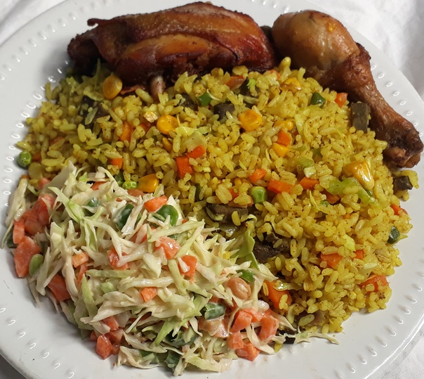

We provide you with all you need for your kitchen
Snacks recipes/ yam recipes/stew recipes/soup recipes
Rice recipes/salad recipes/small chops/cake recipes
CLICK HERE TO REGISTER
Food is essential in our everyday life.it defines how well we live.this is why where ever we find ourselves; we are ready to eat our food daily without being bored one bit.
In Nigeria today eating out is becoming our habbit.This is why it is essential that we all know how to cook this meals, especially the female folks.
Read through our recipes.learn the ones you don't know. Add to what you know when you see a familiar recipe
fried rice is one of the most widely eaten Nigerian food.We will be showing you how to make it.
this is the original egusi soup. You can serve this to your good in-laws when they come to marry a special daughter

if you need a nigeria snack with no sugar meat pie is the best choice: yummy and delicious